Cada día, mas personas deciden participar de un maratón y si bien la mayoría cree que consiste en correr 42 kilómetros, lo cierto es que la distancia oficial para esta competencia es de 42.195 metros (26.2 millas).
Al descubrir esto, la mayoría de los corredores se preguntan ¿cuál es origen de este número tan extraño? ¿por que hay que correr 195 metros extras a los 42 kilómetros?
Si tienes esta duda, a continuación te contaremos como fue el origen de esta competencia tan amada y temida por la mayoría de los corredores.
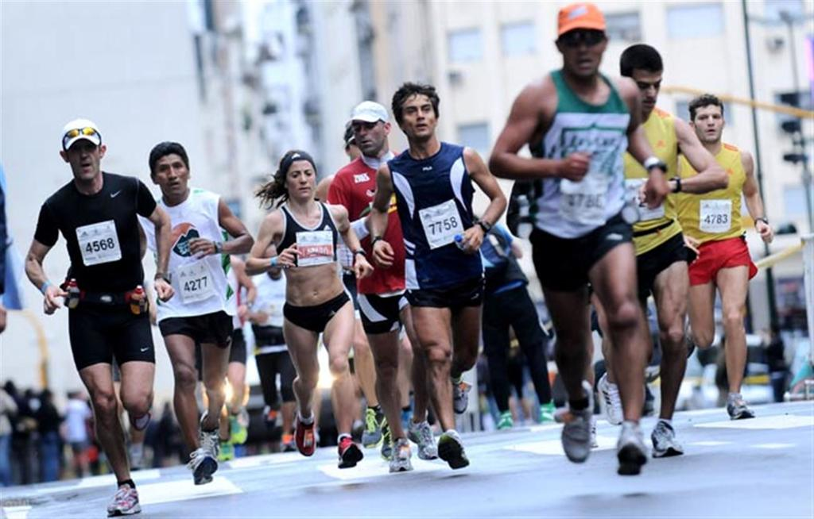
El Mito Griego
El mito dice que el nombre Maratón proviene de la leyenda de Filípides, un mensajero griego, que habría sido enviado desde la bahía de Maratón a la metropolis de Atenas con el objetivo de anunciar la victoria de los griegos frente a los persas en la Batalla de Maratón (490 AC).
La distancia que existe entre Maratón y Atenas, es de aproximadamente 40 kilómetros y este mensajero debió recorrerla velozmente, ya que si no llegaba a tiempo, los atenienses iban a quemar la ciudad y matar a los niños ante la creencia de haber sido derrotados en la Batalla.
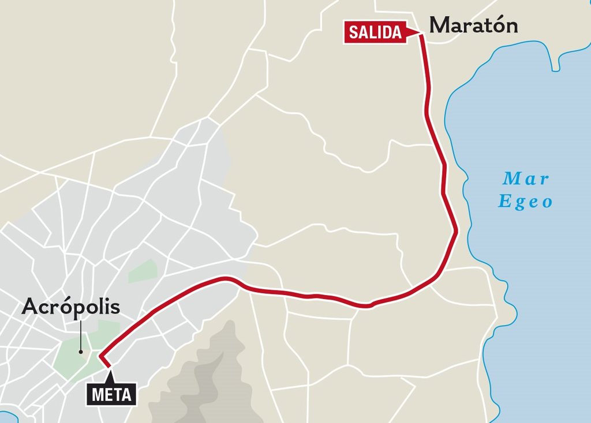
Afortunadamente, Filípides habría logrado la hazaña, y luego de correr los 40 kilómetros con sus últimas fuerzas, se habría desplomado frente a Atenas ante el grito de nenikhamen o nike, que significa “hemos vencido”.
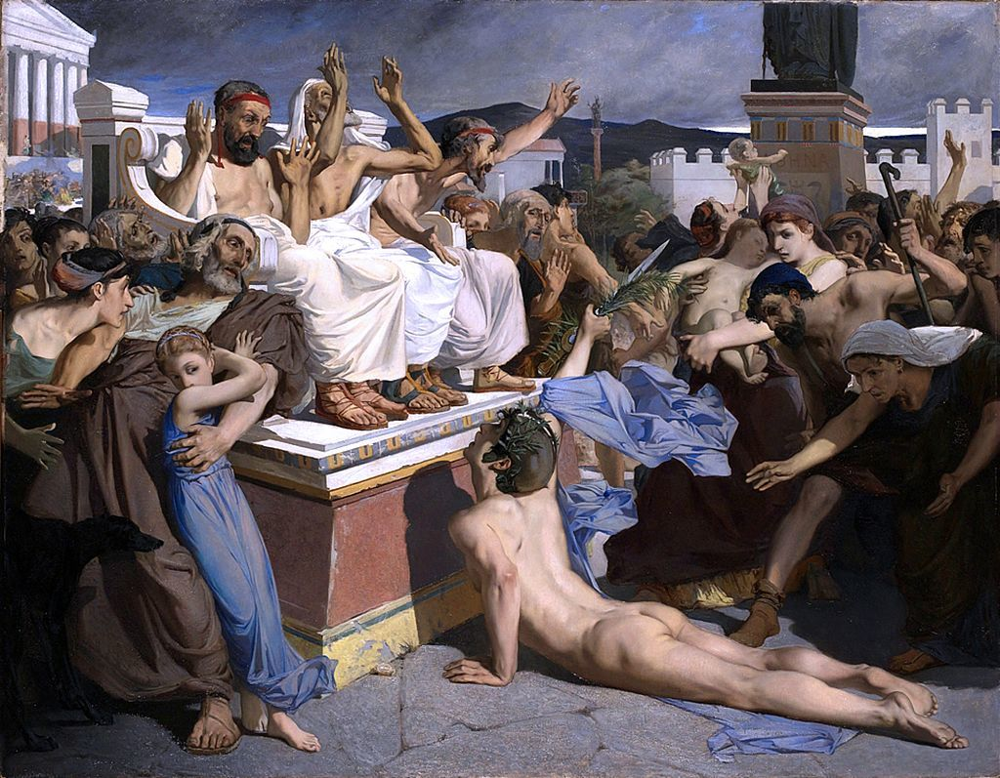
Sin embargo, aunque la leyenda es muy bonita, existen algunos debates sobre la precisión de estos hechos, ya que existirían registros de que Filípides habría corrido, antes de la Batalla de Maratón, desde Atenas hasta Esparta (aprox. 240 km) a fin de solicitar refuerzos y luego volvió.
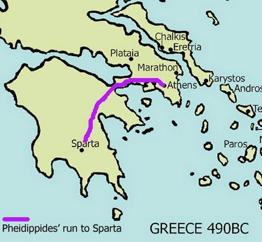
Maratón Olímpico
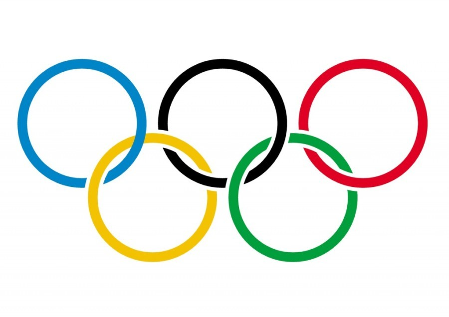
En los primeros Juegos Olímpicos modernos celebrados en Atenas en 1896, los Organizadores buscaban un gran evento que recordara la gloria de la Grecia antigua y surgió la idea del mito de Filípides y la Batalla de Maratón; es así como esta prueba formaría parte del programa de atletismo en los Juegos Olímpicos desde ese momento en la categoría varonil y 88 años después en los Ángeles 1984 para la rama femeníl.
En los primeros Juegos Olímpicos modernos celebrados en Atenas en 1896, los Organizadores buscaban un gran evento que recordara la gloria de la Grecia antigua y surgió la idea del mito de Filípides y la Batalla de Maratón; es así como esta prueba formaría parte del programa de atletismo en los Juegos Olímpicos desde ese momento en la categoría varonil y 88 años después en los Ángeles 1984 para la rama femeníl.
El primer maratón olímpico se realizó el 10 de abril de 1896 y su ganador fue Spyridon Louis, un griego que corrió desde la llanura de Maratón hasta el estadio olímpico de Atenas (40 kms) en 2:58:50 hrs.
Sin embargo, la distancia fue variando a lo largo de los años, dependiendo del circuito que se utilizaba, hasta que en 1908 en los Juegos Olímpicos de Londres fue modificada para que la Reina pudiera ver la salida desde el Castillo Windsor los organizadores se vieron obligados a extender la distancia a los extraños 42.195 metros (26.2 millas).
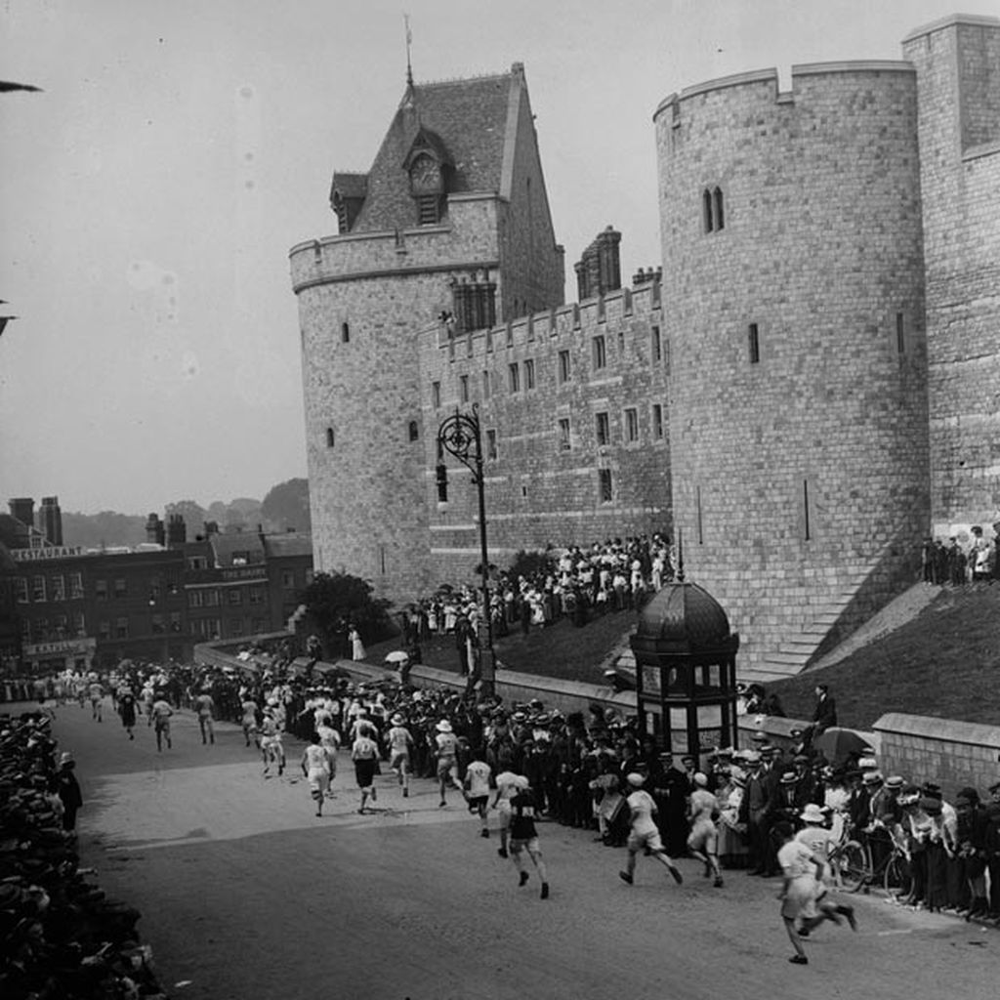
Finalmente, en 1921 la Asociación Internacional de Federaciones Atléticas fijó en forma definitiva que, la maratón consistiría en 42.195 metros o 26.2 millas.
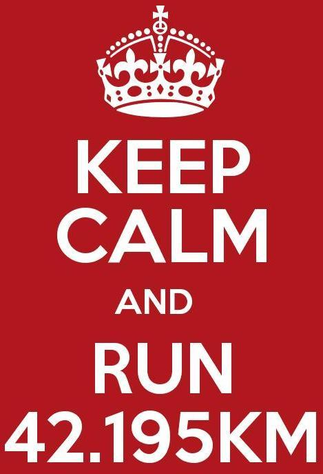
Maratones Mayores
Los World Marathon Majors son una competición internacional que agrupa, desde 2006, a los seis maratones más prestigiosos del mundo:
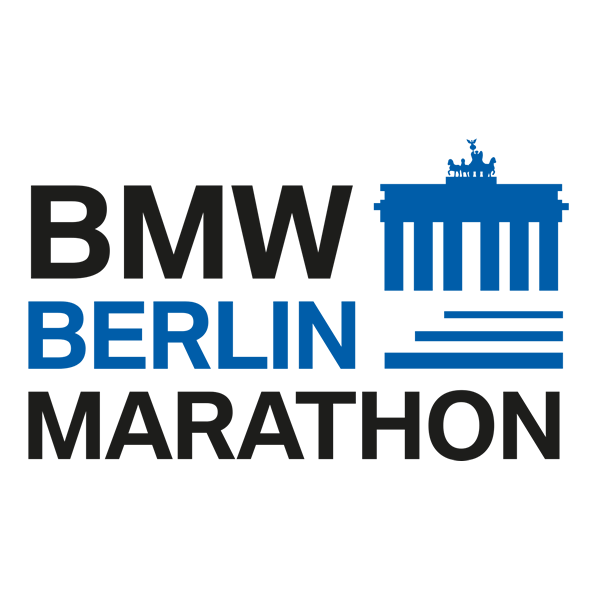
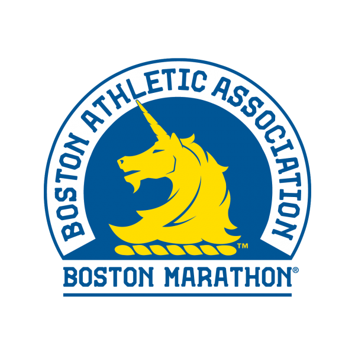
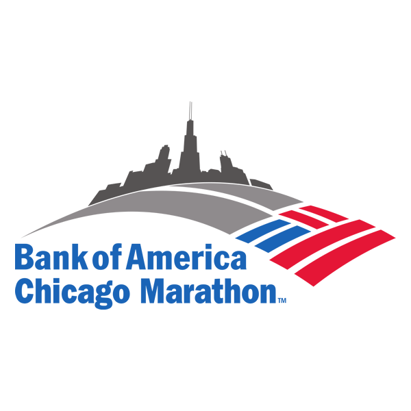
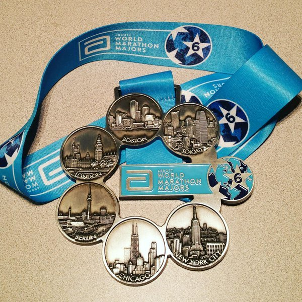
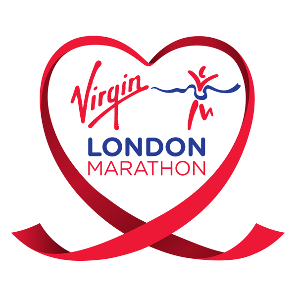
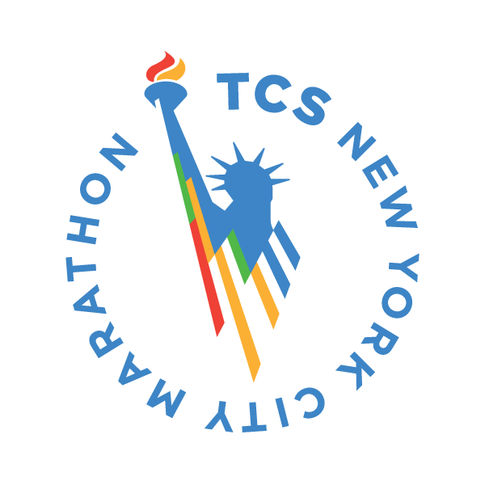
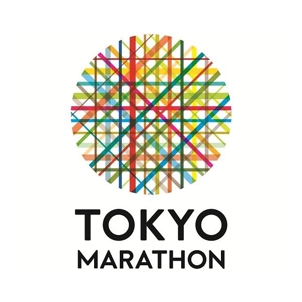
Maratón de Berlín: congrega a unos 40 000 corredores. La primera edición fue en 1973. Se realiza en septiembre.
Maratón de Boston: es el más antiguo de los maratones anuales; data del año 1896. Cada abril se espera a 22 000 participantes. Se conoce como el maratón de los maratonistas, ya que para poder inscribirse es necesario acreditar un determinado tiempo de acuerdo con la edad del participante, conseguido en un maratón internacional en el año previo, aunque ya existen otras formas de registro sin necesidad de dar los tiempos.
Maratón de Chicago: cada octubre se esperan 50 000 corredores. La primera vez que se realizó fue en 1977.
Maratón de Londres: reúne a 49 000 participantes. Su primera edición data del año 1981. Se celebra en abril.
Maratón de Nueva York: es una de las más masivas; anualmente participan unas 50 000 personas. La primera edición fue en el año 1970, con 127 corredores. Usualmente se corre en noviembre de cada año.
Maratón de Tokio: Es la maratón mayor más moderna, creada en 2007, se corre a finales de febrero.